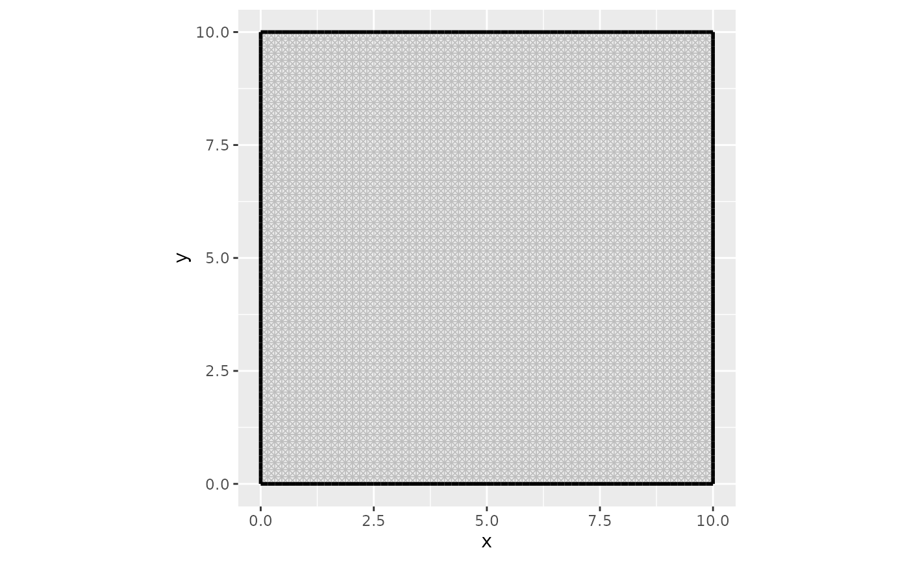
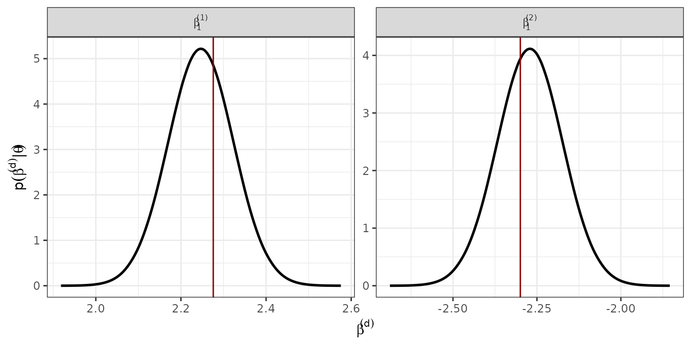

Fitting CoDa using the Logistic Gaussian distribution with Dirichlet covariance structure. An spatial simulation example
Joaquín Martínez-Minaya — jmarmin@eio.upv.es
2024-09-20 15:16:09.008288
simulations.RmdThis document has been created with the purpose of showing how one can fit an LNDR model when dealing with compositional data based on Martı́nez-Minaya and Rue (2024).
library(INLAcomp)
library(sp)
library(ggplot2)
library(dplyr)
library(viridis)
library(INLA)
library(raster)
library(inlabru)
library(parallel)
library(gridExtra)
library(xtable)Functions for plotting
## --------------------------------------
#' Include a suffix to variable names
#'
#' Used with \code{\link[INLA]{inla.stack}} for building effect stacks.
#'
#' @param x a data.frame
#' @param suffix character string to be appended to variable names
#' @param makeNA logical. If \code{TRUE}, returns the suffixed data.frame filled
#' with \code{NA}.
#' @export
suffix <- function(x, suffix, makeNA = FALSE) {
z <- structure(x, names = paste(names(x), suffix, sep = '.'))
if(makeNA) z[] <- NA
z
}
### --- function to convert matrix to raster --- ####
rotate <- function(x)(apply(x,2,rev))
matrix_to_raster <- function(m, proj.grid.mat = proj.grid.mat)
{
raster(rotate(t(m)),
xmn = min(proj.grid.mat$lattice$loc[,1]),
xmx = max(proj.grid.mat$lattice$loc[,1]),
ymn = min(proj.grid.mat$lattice$loc[,2]),
ymx = max(proj.grid.mat$lattice$loc[,2]))
}
# Legend
g_legend <- function(a.gplot) {
tmp <- ggplot_gtable(ggplot_build(a.gplot))
leg <- which(sapply(tmp$grobs, function(x) x$name) == "guide-box")
legend <- tmp$grobs[[leg]]
return(legend) }
###
raster_spatial_effect <- function(spatial, boundary,
boundary1 = INLAcomp::polygon_IP,
rast = TRUE,
res = c(5000, 5000))
{
if(rast == TRUE){
res <- res(raster_predict)
}
proj <- inla.mesh.projector(mesh,
xlim = bbox(boundary)[1,],
ylim = bbox(boundary)[2,],
dims = c(round((bbox(boundary)[1,"max"] - bbox(boundary)[1,"min"])/res[1],0),
round((bbox(boundary)[2,"max"]-bbox(boundary)[2,"min"])/res[2],0)))
if(length(spatial) == mesh$n)
{
field.proj = inla.mesh.project(proj, spatial[1:mesh$n])
field1 <- matrix_to_raster(field.proj, proj.grid.mat = proj)
#field1 <- crop(field1, boundary)
#field1 <- mask(field1, boundary)
#plot(field1)
}else{
res <- matrix(spatial, byrow = FALSE, ncol = k-1)
total <- apply(res, 2,
function(x){
res1 <- inla.mesh.project(proj, x)
field1 <- matrix_to_raster(res1, proj.grid.mat = proj)
#field1 <- crop(field1, boundary1)
#field1 <- mask(field1, boundary1)
#plot(field1)
#field1
})
field1 <- raster::stack(total)
}
field1
}
#Plotting rasters
plot_raster <- function(rast, cat, names,
sc = FALSE,
col1 = "B",
ymin = 0, ymax = 1,
legkeywidth = 1,
poly)
{
sp_eus2 <- fortify(poly)
rast_gc1 <- as(rast[[cat]], "SpatialPixelsDataFrame")
rast_gc1 <- as.data.frame(rast_gc1)
colnames(rast_gc1) <- c("value", "lon", "lat")
gc1_pred <- ggplot() +
geom_tile(data = rast_gc1, aes(x = lon, y = lat, fill = value)) +
# geom_polygon(data = poly, aes(x = long, y = lat, group = group),
# fill = NA, color = "gray20", size = 0.25) +
coord_equal(ratio = 1) +
ggtitle(names) +
theme(line = element_blank(), # remove axis lines ..
axis.text = element_blank(), # .. tickmarks..
axis.title = element_blank(),
panel.background = element_blank(),
legend.position = "bottom",
legend.key.height = unit(0.5, "cm"),
legend.key.width = unit(legkeywidth, "cm"),
legend.title = element_blank(),
legend.text = element_text(size = 14),
plot.title = element_text(size = 14, hjust = 0.5, vjust = -3)) +
#scale_fill_viridis(option = col1, direction = -1, limits = c(ymin, ymax)) +
scale_fill_gradientn(colours = rev(RColorBrewer::brewer.pal(11, "RdYlBu")),
limits = c(ymin, ymax))
if(sc == TRUE)
{
gc1_pred <- gc1_pred +
ggsn::scalebar(sp_eus2, location = "bottomright",
dist = 200, transform = FALSE,
st.size = 3, st.dist = 0.05, height=0.03,
dist_unit = "km")
#ggsn::north(sp_eus2, location = "topright", scale = 0.2,
# symbol = 4)
#ggsn::north2(sp_eus2, x = 0.65, y = 0.9, scale = 0.1, symbol = 1)
#
}
gc1_pred
}
colsc <- function(...) {
scale_fill_gradientn(
colours = rev(RColorBrewer::brewer.pal(11, "RdYlBu")),
limits = range(..., na.rm = TRUE)
)
}Simulating a dataset with replicate random effects
Defining some parameters and seeds for replicating.
true_range <- 4
true_sigma <- 1
D <- 3
N <- 1000
set.seed(314)
inla.seed = sample.int(n=1E6, size=1)Constructing a 2D model in a grid
We will now construct a 2D model, generate a sample of a random field, and attempt to recover the field from observations at a few locations. First, we build a high resolution mesh for the true field, using low level INLA functions.
bnd <- inlabru::spoly(data.frame(x = c(0, 10, 10, 0), y = c(0, 0, 10, 10)))
mesh_fine <- inla.mesh.2d(boundary = bnd, max.edge = 0.2)
ggplot() +
gg(mesh_fine) +
coord_equal()
# Note: the priors here will not be used in estimation
matern_fine <-
inla.spde2.pcmatern(mesh_fine,
prior.sigma = c(1, 0.01),
prior.range = c(1, 0.01)
)
true_Q <- inla.spde.precision(matern_fine, theta = log(c(true_range, true_sigma)))Samples from the fields
Generating a couple of samples from the model:
true_field <- inla.qsample(D-1, true_Q, seed = inla.seed)
#> Warning in inla.qsample(D - 1, true_Q, seed = inla.seed): Since 'seed!=0',
#> parallel model is disabled and serial model is selected
truth <- expand.grid(
lon = seq(0, 10, length = 500),
lat = seq(0, 10, length = 500))
raster_predict <- rasterFromXYZ(truth)
raster_predict[!is.na(raster_predict)] <- 0
truth <- fm_evaluate(
mesh_fine,
loc = as.matrix(truth),
field = true_field
) %>% cbind(truth, .)
names(truth) <- c("lon", "lat", paste0("field", 1:(D-1)))
coordinates(truth) <- c("lon", "lat")
truth <- as(truth, "SpatialPixelsDataFrame")
plot_truth <- lapply(1:(D-1), function(dd){
csc1 <- colsc(truth[[dd]])
ggplot() +
gg(truth, mapping = aes_string("lon", "lat", fill = paste0("field", dd))) +
coord_equal() +
ggtitle(paste0("True field ", dd)) + csc1
})
#> Warning: `aes_string()` was deprecated in ggplot2 3.0.0.
#> ℹ Please use tidy evaluation idioms with `aes()`.
#> ℹ See also `vignette("ggplot2-in-packages")` for more information.
#> This warning is displayed once every 8 hours.
#> Call `lifecycle::last_lifecycle_warnings()` to see where this warning was
#> generated.
truth_r <- stack(truth)
multiplot(plotlist = plot_truth, cols = (D-1))Observations from points. Adding covariates
Extract observations from some random locations:
set.seed(51)
D <- k <- D
#betas <- matrix(c(2.2, -2.4), nrow = D-1, byrow = FALSE)
(betas <- matrix(c(2 + runif(1, -0.5, 0.5),
-2 + runif(1, -0.5, 0.5)), nrow = D-1, byrow = FALSE))
#> [,1]
#> [1,] 2.275975
#> [2,] -2.299530
#Covariance matrix of the response
sigma2 <- runif( D-1, 0.2, 0.6) %>% round(., 2)
cov_param <- 0.1
data <- data.frame(lon = runif(N, 0, 10),
lat = runif(N, 0, 10))
sigma_diag <- sqrt(sigma2 + cov_param)
hypers_lik <- data.frame(hypers = c(sigma2, cov_param),
name1 = c("sigma2.1", "sigma2.2",
"gamma"))
# We create the correlation parameters based on the previous idea
# We are going to have ((D-1)^2 - (D-1))/2 rhos
rho <- diag(1/sigma_diag) %*% matrix(cov_param, D-1, D-1) %*% diag(1/sigma_diag)
diag(rho) <- 1
rho
#> [,1] [,2]
#> [1,] 1.0000000 0.1857594
#> [2,] 0.1857594 1.0000000
#We define the covariate $\boldsymbol{x}$ and also, the corresponding betas, constructing the corresponding linear predictor.
xx <- runif(N)-0.5
data$xx <- xx
# - mean 0 to not affect intercept
X <- data.frame(xx) %>% as.matrix(.)
#Spatial effects. Two different random fields
spatial <- fm_evaluate(
mesh_fine,
loc = as.matrix(data),
field = true_field
)
#Linear predictors
lin.pred <- X %*% t(betas) + spatialData in the simplex
We move back to the Simplex using the
-inverse,
in particular, we use the function alrInv form the
R-package compositions.
y.simplex <- compositions::alrInv(alry)
y.simplex <- as.numeric(t(y.simplex)) %>% matrix(., ncol = D, byrow = TRUE)
colnames(y.simplex) <- paste0("y", 1:D)
data <- cbind(data, alry, y.simplex)
data %>% head(.)
#> lon lat xx alr.y1 alr.y2 y1 y2
#> 1 2.164178 7.5629924 -0.33326109 -0.846303168 2.4042713 0.0343216 0.88567429
#> 2 8.344236 7.7793818 -0.04749689 0.399583098 -0.5431795 0.4854016 0.18908828
#> 3 7.513832 8.1528313 -0.49554979 -0.752270018 0.1622192 0.1780211 0.44425174
#> 4 4.060105 0.2253018 0.45511586 0.052528066 -3.3525703 0.5045329 0.01675229
#> 5 9.710200 2.8148251 0.49812543 2.512558663 -1.8879415 0.9146355 0.01122368
#> 6 1.123315 1.1945009 0.16154746 -0.001549842 -2.6863049 0.4831410 0.03296853
#> y3
#> 1 0.08000411
#> 2 0.32551011
#> 3 0.37772716
#> 4 0.47871480
#> 5 0.07414087
#> 6 0.48389042Plotting the response
bound <- fortify(bnd)
#> Warning: `fortify(<SpatialPolygonsDataFrame>)` was deprecated in ggplot2 3.4.4.
#> ℹ Please migrate to sf.
#> This warning is displayed once every 8 hours.
#> Call `lifecycle::last_lifecycle_warnings()` to see where this warning was
#> generated.
#> Regions defined for each Polygons
data_plot <- data %>%
dplyr::select(all_of(c("lon", "lat", paste0("y", 1:D)))) %>%
tidyr::pivot_longer(all_of(paste0("y", 1:D)))
p1 <- ggplot() +
geom_polygon(data = bound, aes(x = long,
y = lat),
colour = 'gray70', fill = 'gray90') +
geom_point(data = data_plot,
aes(x = lon,
y = lat,
#size = value,
color = value),
alpha = 0.8, size = 3) +
coord_fixed(ratio = 1) +
facet_wrap(~ name, ncol = 4) +
theme_bw() +
theme(line = element_blank(), # remove axis lines ..
axis.text = element_blank(), # .. tickmarks..
axis.title = element_blank(),
panel.background = element_blank(),
legend.position = "bottom",
legend.key.height = unit(0.5, "cm"),
legend.key.width = unit(1.5, "cm"),
legend.title = element_text(size = 17),
legend.text = element_text(size = 15),
strip.text = element_text(size = 15)) +
#guides(fill = guide_legend(title.position="top", title.hjust = 0.5)) +
xlab("") +
ylab("") +
scale_color_viridis(option="magma", direction = -1, limits = c(0, 1),
name = "")
getwd()
#> [1] "/home/runner/work/INLAcomp/INLAcomp/vignettes"
#pdf("simulation_data.pdf", width = 10, height = 5)
print(p1)
#dev.off()Plotting the alr-coordiantes
data_plot_alr <- data %>%
dplyr::select(all_of(c("lon", "lat", paste0("alr.y", 1:(D-1))))) %>%
tidyr::pivot_longer(all_of(paste0("alr.y", 1:(D-1))))
#Plotting the map
p2 <- ggplot() +
geom_polygon(data = bound, aes(x = long,
y = lat),
colour = 'gray70', fill = 'gray90') +
geom_point(data = data_plot_alr,
aes(x = lon,
y = lat,
#size = value,
color = value),
alpha = 0.8, size = 3) +
coord_fixed(ratio = 1) +
facet_wrap(~ name) +
theme_bw() +
theme(line = element_blank(), # remove axis lines ..
axis.text = element_blank(), # .. tickmarks..
axis.title = element_blank(),
panel.background = element_blank(),
legend.position = "bottom",
legend.key.height = unit(0.5, "cm"),
legend.key.width = unit(1.5, "cm"),
legend.title = element_text(size = 17),
legend.text = element_text(size = 15),
strip.text = element_text(size = 15)) +
#guides(fill = guide_legend(title.position="top", title.hjust = 0.5)) +
xlab("") +
ylab("") +
scale_color_viridis(option="magma", direction = -1,
name = "")
#pdf("simulation_data_alr.pdf", width = 9, height = 5)
print(p2)
#dev.off()Preparing the data for fitting
Defining a new column with the values of all alr
coordinates
names_gc <- paste0("y", 1:(D-1))
data_ext <- data %>%
tidyr::pivot_longer(., cols = all_of(paste0("alr.", names_gc)),
names_to = "alr_gc",
values_to = "val_alr_gc") %>%
.[order(ordered(.$alr_gc)),]
head(data_ext[, c("lon", "lat", "alr_gc", "val_alr_gc")])
#> # A tibble: 6 × 4
#> lon lat alr_gc val_alr_gc
#> <dbl> <dbl> <chr> <dbl>
#> 1 2.16 7.56 alr.y1 -0.846
#> 2 8.34 7.78 alr.y1 0.400
#> 3 7.51 8.15 alr.y1 -0.752
#> 4 4.06 0.225 alr.y1 0.0525
#> 5 9.71 2.81 alr.y1 2.51
#> 6 1.12 1.19 alr.y1 -0.00155Defining index for indiciating which alr-coordinate are we dealing with
data_ext$alr_gc <- ordered(data_ext$alr_gc)
k.group <- data_ext$alr_gc %>% as.numeric() #For group
k.repl <- data_ext$alr_gc %>% as.numeric() #For replication
head(data.frame(k.group, k.repl))
#> k.group k.repl
#> 1 1 1
#> 2 1 1
#> 3 1 1
#> 4 1 1
#> 5 1 1
#> 6 1 1The mesh
We create the mesh as we usually do in R-INLA for spatial effects.
mesh <- inla.mesh.2d(boundary = bnd,
max.edge = 0.5,
cutoff = 0.1,
min.angle= 30,
offset = c(0.2, 2))
ggplot() +
gg(mesh) +
coord_equal() +
geom_point(data = data,
aes(x = lon, y = lat))Defining the spde
Defining spde with priors
We use PC-priors for defining the spde object.
size <- 10
range0 <- size / 4 # ~ default
spde <- inla.spde2.pcmatern(mesh = mesh,
prior.range = c(range0, 0.25), # P(range < range0) = 0.25
prior.sigma = c(1, 0.01)) # P(sigma > 1) = 0.01Index for the spatial effects
We distinguish if we copy the spatial effect or we replicate it.
Spatial index to be used in the model. We define it by alr-coordinate
This spatial index is useful when we replicate spatial effects, in other words, when we have one spatial effect per linear predictor whose realizations are different and hyperparameters are equal.
iset <- inla.spde.make.index('i', n.spde = spde$n.spde,
n.repl = k-1) #Replicating spatial effectDefining the projection matrix
A.est <- inla.spde.make.A(mesh = mesh,
loc = cbind(data_ext$lon, data_ext$lat),
repl = k.repl)
A.est2 <- A.estDefining the corresponding part to the shared random effect
Defining the inla.stack
Response
We define a list with three elements (three alr-coordinates) in the format that R-INLA uses when deal with several likelihoods.
#Response
names_alr <- paste0("alr.", names_gc)
1:length(names_alr) %>%
lapply(., function(i){
data_ext %>%
dplyr::filter(alr_gc == names_alr[i]) -> data_comp_i
#Response
y_alr <- matrix(ncol = names_alr %>% length(.), nrow = dim(data_comp_i)[1])
y_alr[, i] <- data_comp_i$val_alr_gc
}) -> y_alr
1:length(names_alr) %>%
lapply(., function(i){
y_aux <- data_ext %>%
dplyr::select(val_alr_gc, alr_gc) %>%
dplyr::filter(alr_gc == names_alr[i]) %>%
dplyr::select(val_alr_gc) %>%
as.matrix(.)
aux_vec <- rep(NA, k-1)
aux_vec[i] <- 1
kronecker(aux_vec, y_aux)
}) -> y_alr_list
y_alr <- do.call(cbind, y_alr_list)
y_alr[1:10,]
#> [,1] [,2]
#> [1,] -0.846303168 NA
#> [2,] 0.399583098 NA
#> [3,] -0.752270018 NA
#> [4,] 0.052528066 NA
#> [5,] 2.512558663 NA
#> [6,] -0.001549842 NA
#> [7,] 1.164093794 NA
#> [8,] 2.047636770 NA
#> [9,] 0.564710978 NA
#> [10,] 1.064159558 NACovariates
Covariates are going to be included in the model as random effects with big variance. So, we need the values of the covariates (the scaled one), and also, an index indicating to which alr-coordinate it belongs.
Inla stack for estimation
stk.est <- inla.stack(data = list(resp = y_alr),
A = list(A.est, 1, A.est2),
effects = list(c(iset),
cbind(data_ext %>%
dplyr::select(starts_with("xx")),
id.z,
id.variables,
intercept = 1),
data.frame(iset2)),
tag = 'est')Fitting the different models
Type I
Share the same parameters for fixed effects, and do not include spatial random e↵ects.
list_prior <- rep(list(list(prior = "pc.prec", param = c(1, 0.01))), k-1)
formula.typeI <- resp ~ -1 +
xx +
f(id.z,
model = "iid",
hyper = list(prec = list(prior = "pc.prec",
param = c(1, 0.01))), constr = TRUE)
model.typeI <- inla(formula.typeI,
family = rep("gaussian", k - 1),
data = inla.stack.data(stk.est),
control.compute = list(config = TRUE,
dic = TRUE,
waic = TRUE,
cpo = TRUE),
control.predictor = list(A = inla.stack.A(stk.est),
compute = TRUE),
control.family = list_prior,
verbose = FALSE)Type II
Have different parameters for fixed effects, and do not include spatial random e↵ects.
formula.typeII <- resp ~ -1 +
f(id.xx, xx, #BIO1
model = "iid",
initial = log(1/10000),
fixed = TRUE) +
f(id.z,
model = "iid",
hyper = list(prec = list(prior = "pc.prec",
param = c(1, 0.01))), constr = TRUE)
model.typeII <- inla(formula.typeII,
family = rep("gaussian", k - 1),
data = inla.stack.data(stk.est),
control.compute = list(config = TRUE,
dic = TRUE,
waic = TRUE,
cpo = TRUE),
control.predictor = list(A = inla.stack.A(stk.est),
compute = TRUE),
control.family = list_prior,
verbose = FALSE)Type III
Share the same parameters for fixed effects, and share the same spatial effect.
formula.typeIII <- resp ~ -1 +
xx +
f(iset.alr1, model = spde) +
f(iset.alr2, copy = "iset.alr1",
fixed = TRUE) +
f(id.z,
model = "iid",
hyper = list(prec = list(prior = "pc.prec",
param = c(1, 0.01))), constr = TRUE)
model.typeIII <- inla(formula.typeIII,
family = rep("gaussian", k - 1),
data = inla.stack.data(stk.est),
control.compute = list(config = TRUE,
dic = TRUE,
waic = TRUE,
cpo = TRUE),
control.predictor = list(A = inla.stack.A(stk.est),
compute = TRUE),
control.family = list_prior,
verbose = FALSE)Type IV
Have different parameters for fixed effects, and share the same spatial effect.
list_prior <- rep(list(list(prior = "pc.prec", param = c(1, 0.01))), k-1)
formula.typeIV <- resp ~ -1 +
f(id.xx, xx,
model = "iid",
initial = log(1/10000),
fixed = TRUE) +
f(iset.alr1, model = spde) +
f(iset.alr2, copy = "iset.alr1",
fixed = TRUE) +
f(id.z,
model = "iid",
hyper = list(prec = list(prior = "pc.prec",
param = c(1, 0.01))),
constr = TRUE)
model.typeIV <- inla(formula.typeIV,
family = rep("gaussian", k - 1),
data = inla.stack.data(stk.est),
control.compute = list(config = TRUE,
dic = TRUE,
waic = TRUE,
cpo = TRUE),
control.predictor = list(A = inla.stack.A(stk.est),
compute = TRUE),
control.family = list_prior,
verbose = FALSE)Type V
Share the same parameters for fixed effects, and the spatial effects between linear predictors are proportional.
formula.typeV <- resp ~ -1 +
xx +
f(iset.alr1, model = spde) +
f(iset.alr2, copy = "iset.alr1",
fixed = FALSE) +
f(id.z,
model = "iid",
hyper = list(prec = list(prior = "pc.prec",
param = c(1, 0.01))), constr = TRUE)
model.typeV <- inla(formula.typeV,
family = rep("gaussian", k - 1),
data = inla.stack.data(stk.est),
control.compute = list(config = TRUE,
dic = TRUE,
waic = TRUE,
cpo = TRUE),
control.predictor = list(A = inla.stack.A(stk.est),
compute = TRUE),
control.family = list_prior,
verbose = FALSE)Type VI
Have different parameters for fixed effects, and the spatial effects between linear predictors are proportional
list_prior <- rep(list(list(prior = "pc.prec", param = c(1, 0.01))), k-1)
formula.typeVI <- resp ~ -1 +
f(id.xx, xx, #xx
model = "iid",
initial = log(1/10000),
fixed = TRUE) +
f(iset.alr1, model = spde) +
f(iset.alr2, copy = "iset.alr1",
hyper = list(beta = list(fixed = FALSE, params = c(0, 1)))) +
f(id.z,
model = "iid",
hyper = list(prec = list(prior = "pc.prec",
param = c(1, 0.01))),
constr = TRUE)
model.typeVI <- inla(formula.typeVI,
family = rep("gaussian", k - 1),
data = inla.stack.data(stk.est),
control.compute = list(config = TRUE,
dic = TRUE,
waic = TRUE,
cpo = TRUE),
control.predictor = list(A = inla.stack.A(stk.est),
compute = TRUE),
control.family = list_prior,
verbose = FALSE)
#model.typeVI <- inla.rerun(model.typeVI)Type VII
Share the same parameters for fixed effects, and different realisations of the spatial effect for each linear predictor
formula.typeVII <- resp ~ -1 +
xx +
f(i,
model = spde,
replicate = i.repl) +
f(id.z,
model = "iid",
hyper = list(prec = list(prior = "pc.prec",
param = c(1, 0.01))), constr = TRUE)
model.typeVII <- inla(formula.typeVII,
family = rep("gaussian", k - 1),
data = inla.stack.data(stk.est),
control.compute = list(config = TRUE,
dic = TRUE,
waic = TRUE,
cpo = TRUE),
control.predictor = list(A = inla.stack.A(stk.est),
compute = TRUE),
control.family = list_prior,
inla.mode = "experimental" ,
verbose = FALSE)Type VIII
Have different parameters for fixed effects, and different realisations of the spatial effect for each linear predictor
list_prior <- rep(list(list(prior = "pc.prec", param = c(1, 0.01))), k-1)
formula.typeVIII <- resp ~ -1 +
f(id.xx, xx, #xx
model = "iid",
initial = log(1/10000),
fixed = TRUE) +
f(i,
model = spde,
replicate = i.repl) +
f(id.z,
model = "iid",
hyper = list(prec = list(prior = "pc.prec",
param = c(1, 0.01))), constr = TRUE)
model.typeVIII <- inla(formula.typeVIII,
family = rep("gaussian", k - 1),
data = inla.stack.data(stk.est),
control.compute = list(config = TRUE,
dic = TRUE,
waic = TRUE,
cpo = TRUE),
control.predictor = list(A = inla.stack.A(stk.est),
compute = TRUE),
control.family = list_prior,
verbose = FALSE)Comparing using DIC, WAIC and LCPO
In this tutorial, for the moment, we compute the DIC, WAIC and LCPO for all the models.
DIC and WAIC: We obtain the joint posterior distribution of the model
using the inla.posterior.sample function. We use the
functions dic.mult and waic.mult for computing
the new DIC and WAIC.
CPO: We define friends in our dataset. We use the function
inla.group.cv with the argument
num.level.sets = -1 for computing the CPO.
model_list <- list(model.typeI,
model.typeII,
model.typeIII,
model.typeIV,
model.typeV,
model.typeVI,
model.typeVII,
model.typeVIII)
names(model_list) <- paste0("type", c("I", "II", "III", "IV", "V", "VI", "VII", "VIII"))
## Computing measures of this model
measures <- lapply(model_list, function(mod1){
xx <- inla.posterior.sample(1000, mod1, seed = inla.seed)
inf <- parallel::mclapply(xx, INLAcomp::extract_lp_sigma)
#DIC
dic.mod1 <- INLAcomp::dic.mult(inf, y = data[, c(paste0("alr.y", 1:(k-1)))])
#WAIc
waic.mod1 <- INLAcomp::waic.mult(inf, y = data[, c(paste0("alr.y", 1:(k-1)))])
#lIST FOR cpo
friends_list <- 1:(N*(D-1)) %>%
lapply(., function(x){
c(seq(x, N*(D-1), by = N)[-1],
rev(seq(x, 1, by = -N))) -> res
res[order(res)]
})
a4 <- INLA::inla.group.cv(result = mod1,
num.level.sets = -1,
strategy = "posterior",
friends = friends_list,
verbose = FALSE)
LCPO <- a4$cv %>% log(.) %>% mean(.) %>% -.
data.frame(DIC = dic.mod1, WAIC = waic.mod1, LCPO = LCPO)
})
#> Warning in inla.posterior.sample(n, rfake, intern = intern, use.improved.mean =
#> use.improved.mean, : Since 'seed!=0', parallel model is disabled and serial
#> model is selected, num.threads='1:1'
#> Warning in inla.posterior.sample(n, rfake, intern = intern, use.improved.mean =
#> use.improved.mean, : Since 'seed!=0', parallel model is disabled and serial
#> model is selected, num.threads='1:1'
#> Warning in inla.posterior.sample(n, rfake, intern = intern, use.improved.mean =
#> use.improved.mean, : Since 'seed!=0', parallel model is disabled and serial
#> model is selected, num.threads='1:1'
#> Warning in inla.posterior.sample(n, rfake, intern = intern, use.improved.mean =
#> use.improved.mean, : Since 'seed!=0', parallel model is disabled and serial
#> model is selected, num.threads='1:1'
#> Warning in inla.posterior.sample(n, rfake, intern = intern, use.improved.mean =
#> use.improved.mean, : Since 'seed!=0', parallel model is disabled and serial
#> model is selected, num.threads='1:1'
#> Warning in inla.posterior.sample(n, rfake, intern = intern, use.improved.mean =
#> use.improved.mean, : Since 'seed!=0', parallel model is disabled and serial
#> model is selected, num.threads='1:1'
#> Warning in inla.posterior.sample(n, rfake, intern = intern, use.improved.mean =
#> use.improved.mean, : Since 'seed!=0', parallel model is disabled and serial
#> model is selected, num.threads='1:1'
#> Warning in inla.posterior.sample(n, rfake, intern = intern, use.improved.mean =
#> use.improved.mean, : Since 'seed!=0', parallel model is disabled and serial
#> model is selected, num.threads='1:1'
measures <- as.data.frame(do.call(rbind, measures))
xtable::xtable(measures[, c("DIC.dic", "WAIC.waic", "LCPO")], digits = 3)
#> % latex table generated in R 4.4.1 by xtable 1.8-4 package
#> % Fri Sep 20 15:20:26 2024
#> \begin{table}[ht]
#> \centering
#> \begin{tabular}{rrrr}
#> \hline
#> & DIC.dic & WAIC.waic & LCPO \\
#> \hline
#> typeI & 7326.280 & 7326.363 & 1.830 \\
#> typeII & 6920.997 & 6921.282 & 1.729 \\
#> typeIII & 6599.444 & 6585.952 & 1.642 \\
#> typeIV & 6194.114 & 6174.317 & 1.536 \\
#> typeV & 6567.011 & 6577.076 & 1.643 \\
#> typeVI & 5698.696 & 5695.981 & 1.596 \\
#> typeVII & 5792.595 & 5804.340 & 1.452 \\
#> typeVIII & 4719.775 & 4738.928 & 1.183 \\
#> \hline
#> \end{tabular}
#> \end{table}Checking posterior distributions of the best model
Recovering spatial random fields
We represent the median and credible intervals 95% for the spatial random fields.
model <- model.typeVIII
spatial_median <- raster_spatial_effect(spatial = model$summary.random[['i']][['0.5quant']],
boundary = raster_predict,
boundary1 = bnd)
spatial_q.025 <- raster_spatial_effect(spatial = model$summary.random[['i']][["0.025quant"]],
boundary = raster_predict,
boundary1 = bnd)
spatial_q.975 <- raster_spatial_effect(spatial = model$summary.random[['i']][["0.975quant"]],
boundary = raster_predict,
boundary1 = bnd)
range.sp1 <- range(c(values(spatial_median[[1]]), values(truth_r[[1]]),
values(spatial_q.975[[1]]), values(spatial_q.025[[1]])))
range.sp2 <- range(c(values(spatial_median[[2]]), values(truth_r[[2]]),
values(spatial_q.975[[2]]), values(spatial_q.025[[2]])))
#Plotting
p1.alr1.Real <- plot_raster(rast = truth_r,
ymin = range.sp1[1], ymax = range.sp1[2],
poly = bnd,
cat = 1,
names = "alr.y1-Real",
legkeywidth = 2)
#> Regions defined for each Polygons
p1.alr1.median <- plot_raster(rast = spatial_median,
ymin = range.sp1[1], ymax = range.sp1[2],
poly = bnd,
cat = 1,
names = "alr.y1-Median",
legkeywidth = 2)
#> Regions defined for each Polygons
p1.alr1.025 <- plot_raster(rast = spatial_q.025,
ymin = range.sp1[1], ymax = range.sp1[2],
poly = bnd,
cat = 1,
names = "alr.y1-Q0.025",
legkeywidth = 2)
#> Regions defined for each Polygons
p1.alr1.975 <- plot_raster(rast = spatial_q.975,
ymin = range.sp1[1], ymax = range.sp1[2],
poly = bnd,
cat = 1,
names = "alr.y1-Q0.975",
legkeywidth = 2)
#> Regions defined for each Polygons
## alr2
p1.alr2.Real <- plot_raster(rast = truth_r,
ymin = range.sp2[1], ymax = range.sp2[2],
poly = bnd,
cat = 2,
names = "alr.y2-Real",
legkeywidth = 2)
#> Regions defined for each Polygons
p1.alr2.median <- plot_raster(rast = spatial_median,
ymin = range.sp2[1], ymax = range.sp2[2],
poly = bnd,
cat = 2,
names = "alr.y2-Median",
legkeywidth = 2)
#> Regions defined for each Polygons
p1.alr2.025 <- plot_raster(rast = spatial_q.025[[2]],
ymin = range.sp2[1], ymax = range.sp2[2],
poly = bnd,
cat = 1,
names = "alr.y2-Q0.025",
legkeywidth = 2)
#> Regions defined for each Polygons
p1.alr2.975 <- plot_raster(rast = spatial_q.975[[2]],
ymin = range.sp2[1], ymax = range.sp2[2],
poly = bnd,
cat = 1,
names = "alr.y2-Q0.975",
legkeywidth = 2)
#> Regions defined for each Polygons
mylegend_alr1 <- g_legend(p1.alr1.Real)
mylegend_alr2 <- g_legend(p1.alr2.Real)
gridExtra::grid.arrange(gridExtra::arrangeGrob(p1.alr1.Real + theme(legend.position = "none"),
p1.alr1.median + theme(legend.position = "none"),
p1.alr1.025 + theme(legend.position = "none"),
p1.alr1.975 + theme(legend.position = "none"),
nrow = 1),
gridExtra::arrangeGrob(mylegend_alr1,
nrow = 1, widths = c(4)),
gridExtra::arrangeGrob(p1.alr2.Real + theme(legend.position = "none"),
p1.alr2.median + theme(legend.position = "none"),
p1.alr2.025 + theme(legend.position = "none"),
p1.alr2.975 + theme(legend.position = "none"),
nrow = 1),
gridExtra::arrangeGrob(mylegend_alr2, nrow = 1, widths = c(4)),
nrow = 4, ncol = 1, heights = c(6, 1, 6, 1))
#png(paste0("spatial","_", N, ".png"), width = 1400, height = 1050, res = 150)Recovering corresponding to the fixed effects
lapply(1:(D-1), function(xx){
data.frame(inla.smarginal(model$marginals.random$id.xx[[xx]]),
alr = paste0("(", xx, ")"),
var = "beta1")
}) %>% do.call(rbind.data.frame, .) -> data_fixed2
#data_fixed <- rbind(data_fixed, data_fixed2)
data_fixed <- data_fixed2
data_fixed$alrvar = data_fixed$alr
fixed.real <- data.frame(real = c(as.numeric((betas))),
alrvar = c( paste0("(", 1:(D-1), ")")))
p.fixed <- ggplot() +
geom_line(data = data_fixed, aes(x = x, y = y), size = 0.9) +
geom_vline(data = fixed.real, aes(xintercept = real), col = "red4") +
theme_bw() +
theme(legend.position = "bottom") +
facet_wrap(~ alrvar, nrow = 1, scales = "free",
labeller = label_bquote(beta [1] ^ .(alrvar))) +
xlab(expression(beta^(d))) +
ylab(expression(p(beta^(d) *'|'* theta))) +
theme(legend.title = element_blank())
#> Warning: Using `size` aesthetic for lines was deprecated in ggplot2 3.4.0.
#> ℹ Please use `linewidth` instead.
#> This warning is displayed once every 8 hours.
#> Call `lifecycle::last_lifecycle_warnings()` to see where this warning was
#> generated.
#pdf("posterior_fixed.pdf", width = 6, height = 5)
print(p.fixed)
#dev.off()Recovering hyperparameters
prec <- model$marginals.hyperpar[1:(D-1)] %>%
c(., list(model$marginals.hyperpar$`Precision for id.z`))
hyper <- lapply(1:length(prec),
function(x){
inla.smarginal(inla.tmarginal(prec[[x]], fun = function(y)(1/y))) %>%
data.frame(.)
})
names(hyper) <- c(paste0("sigma2.", 1:(D-1)), "gamma")
hyper <- c(hyper,
sigma.sp = list(inla.smarginal(model$marginals.hyperpar[["Stdev for i"]])),
phi = list(inla.smarginal(model$marginals.hyperpar[["Range for i"]])))
hyper.df <- lapply(1:length(hyper),
function(x){
cbind(data.frame(hyper[[x]]), name1 = names(hyper)[x])
}) %>%
do.call(rbind.data.frame, .)
hyper.df$name1 <- ordered(hyper.df$name1,
levels = c(paste0("sigma2.", 1:(D-1)),
"gamma", "phi", "sigma.sp"))
#hyper.df$name1 <- as.character(hyper.df$name1)
hyper.df$name1 <- ordered(hyper.df$name1,
levels = c("sigma2.1", "sigma2.2",
"gamma", "phi", "sigma.sp"),
labels = c("sigma[1]^2", "sigma[2]^2", "gamma", "phi", "sigma[w]"))
hyper.real <- data.frame(real = c(sigma2, cov_param, true_range, true_sigma),
name1 = c(paste0("sigma2.", 1:(D-1)),
"gamma", "phi", "sigma.sp"))
hyper.real$name1 <- as.factor(hyper.real$name1)
hyper.real$name1 <- ordered(hyper.real$name1,
levels = c("sigma2.1", "sigma2.2",
"gamma", "phi", "sigma.sp"),
labels = c("sigma[1]^2", "sigma[2]^2", "gamma", "phi", "sigma[w]"))
p.hyper <- ggplot(hyper.df) +
geom_line(aes(x = x, y = y)) +
geom_vline(data = hyper.real, aes(xintercept = real), col = "red4") +
facet_wrap(~ name1, scales = "free",
labeller = label_parsed) +
theme_bw() +
xlab(expression(theta)) +
ylab(expression(p(theta*'|'*y)))
#pdf("simulation_data_hyperpar.pdf", width = 9, height = 5)
print(p.hyper)
#dev.off()